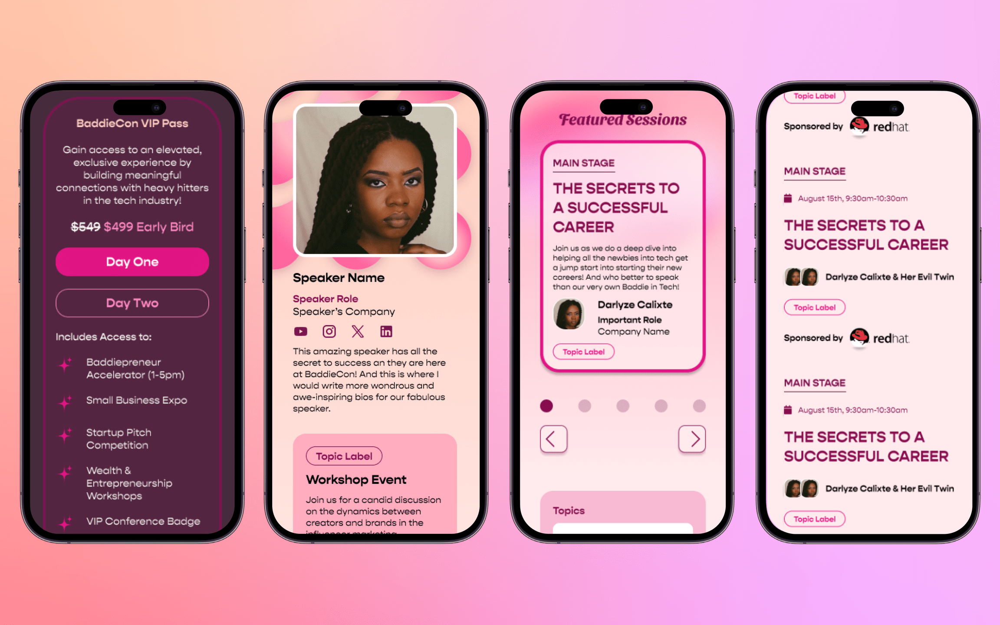

BaddieCon 2024
First of its kind virtual hackathon for Women and Allies.
Project Brief
I was the sole UX Designer for the BaddieCon NYC 2024 website. I designed the entire website from scratch, using visuals from the Graphic Designer, copy from the UX Writer, and stakeholder feedback. The conference, run by Baddies In Tech, was created to empower women of color and allies to develop their professional careers and give them a space to network. This 2nd annual event included expos, panels, and workshops to help our attendees grow their skills and build connections in the tech industry.
Final frames of ticket purchase, speaker information, featured panels, and agenda on desktop.
Final frames of ticket purchase, speaker information, featured panels, and agenda on mobile.
Purpose
- Time
- Interest
- Motivation
- Choice Factors
To do so, I considered the following:
Who is BaddieCon's target audience?
The target is women of color. How could I make them feel authentically included and foster a collaborative, open, safe space?
(Image of BaddieCon participants, courtesy of Baddies in Tech)
What are BaddieCon's user goals?
2024 brought thousands of tech layoffs in the same swoop that thousands of new tech grads were breaking into the field. To be different, BaddieCon needed to deliver employment opportunities and business connections.
(Image of speaker Stephanie Ike Okaforl at BaddieCon)
What is BaddieCon's definition of success?
To ensure we are working towards the same goal, we laid out success metrics:
- 50% increase in social media engagement
- 30% sales increase for future BaddeCons
- 55% re-attendance rate for BaddieCon 2025
(Networking opportunities were abundant at BaddieCon 2024)
Who are BaddieCon's competitors?
Knowing what the competition is doing helps us understand the low-hanging fruit and opportunities to stand out in the market. How can I use this opportunity and intel to build a concrete, high-level presence for BaddieCon?
(Social media announcement of sold out tickets on August 15, 2024)
The Process
Project meetings began in March. The conference was in August so we were already on a time crunch! I previously worked with Baddies in Tech for their 2024 Buildathon, so I had some working demographic data to start building on. To keep track of feedback requests, I maintained a work diary with important meetings, work tasks, and suggestions.
(I kept short, but detailed notes of meetings, tasks, and requests)
I studied other tech conferences and their websites to pull inspiration and best practices. What ideas could I take, and what elements could I improve on? I knew I didn't need to reinvent the wheel but if I could deliver the best version of the wheel that would be a win in my book. The first site that caught my attention was INBOUND.
#1 INBOUND
What we liked:
- How INBOUND displayed its speaker lineup
- How easy it was to filter topic area
#2 Dashcon
What we liked:
- The clean and simplistic layout
- THE “About” Section
The Three Phases
Our website was always in a constant state of change, depending on what information we needed to push at what time.
Phase 1: Announcing BaddieCon
Goals
- Raise awareness of the upcoming conference
- Call for speakers
Phase 2: Tickets Ready for Sale
Goals
- Announce that tickets are for sale
- We were still announcing for speakers and sponsors
Phase 3: Presenting BaddieCon
Goals
- Sell tickets
- Announce speakers and sponsors
- Tease workshops
- Garner excitement, engagement, and awareness
Wireframes
Since the site would need to be dynamic and gradually evolve in stages, I wanted to allow flexibility.
The first iteration of part of our landing page. I wanted to display the text and images, but it took up too much space and required a lot of scrolling.
I made the frame smaller, but stakeholders wanted a different layout.
I created this final frame to account for the additional text I needed to add
Visual Design
Our graphic designer did a fantastic job applying the tone we wanted to incorporate with BaddieCon. We used feminine colors such as pinks and magentas to highlight that this space is safe for women.
To display our options for BaddieCon24 passes, I made an interactive display to prevent endless scrolling.
Success + Results
Although time and competition were stacked against us, BaddieCon 2024 saw overwhelming success. We not only met, but we overachieved our KPI's:

Reflections
This is my second time working alongside Baddies in Tech and growing substantially in my field as a UX Designer. I learned that:
Sometimes, there's no need to reinvent the wheel; there are plenty of existing examples to take and mold into your design.
Designs change based on the client's and the users' needs, so always be open-minded and willing to iterate as necessary.
By staying organized and focused, I strategically prioritized tasks to not only meet but exceed expectations.